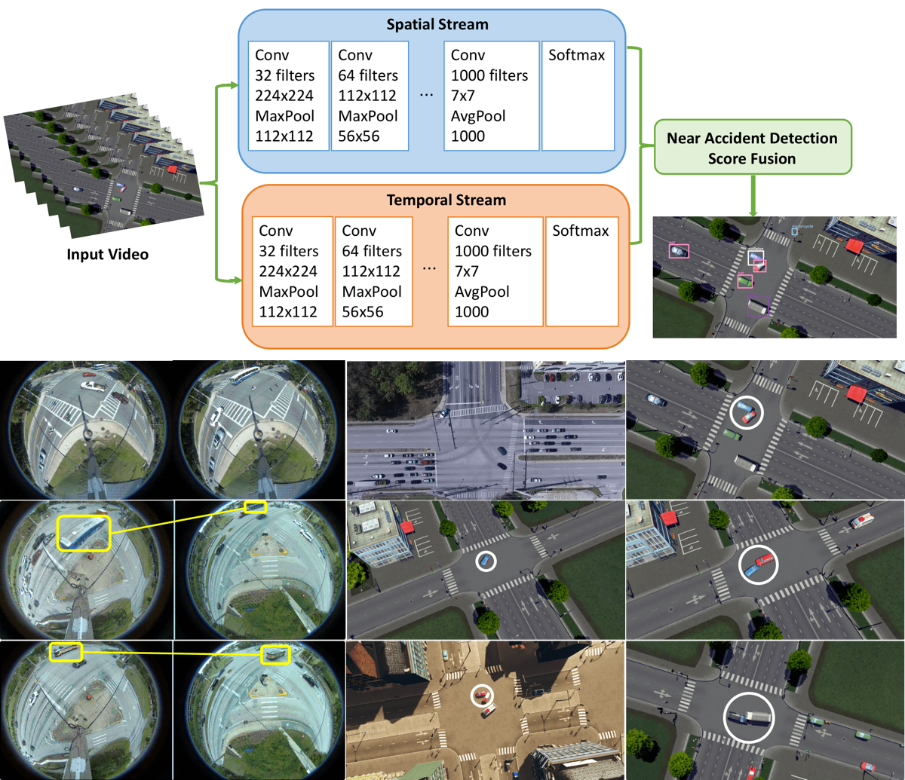
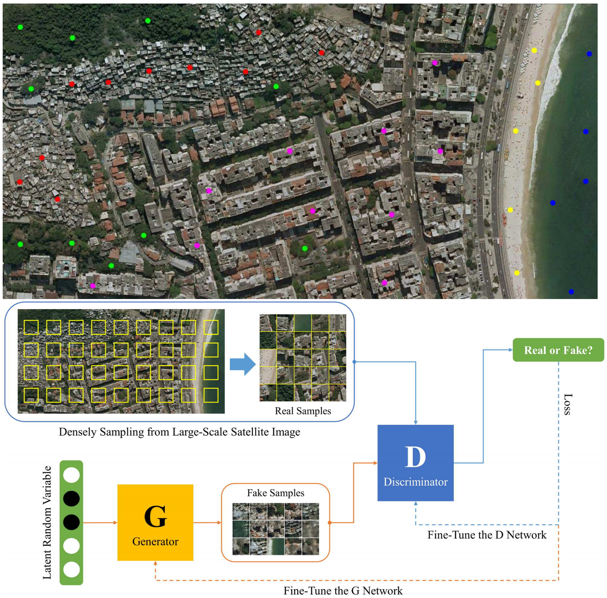
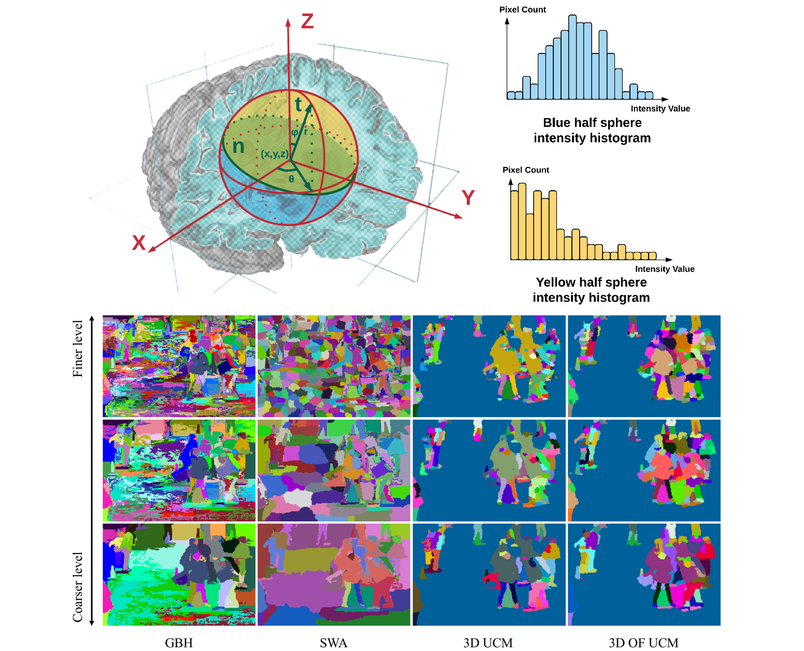
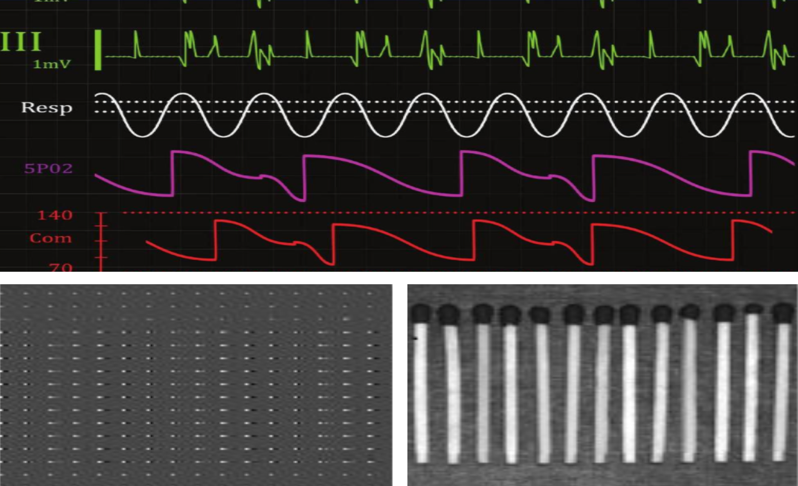

Publications

Intelligent Intersection: Two-Stream Convolutional Networks for Real-time Near Accident Detection in Traffic Video
Xiaohui Huang, Pan He, Anand Rangarajan and Sanjay Ranka
ACM Transactions on Spatial Algorithms and Systems (TSAS): Special issue on Urban Mobility: Algorithms and Systems (Under Review) [pdf]

Densely Labeling Large-Scale Satellite Images with Generative Adversarial Networks
Yupeng Yan, Xiaohui Huang, Anand Rangarajan and Sanjay Ranka
IEEE International Conference on Big Data Intelligence and Computing (DataCom 2018), (accepted June 2018). [pdf]

Supervoxel-based segmentation of 3D imagery with optical flow integration for spatiotemporal processing
Xiaohui Huang, Chengliang Yang, Sanjay Ranka and Anand Rangarajan
IPSJ Transactions on Computer Vision and Applications, (accepted May 2018). [pdf]

A Fast Algorithm Based on Discrete Cosine Transform (DCT)
Xiaohui Huang, Weizhi Huang, Ke Yuan and Kun He
Applied Mechanics and Materials (Volumes 644-650). [pdf]